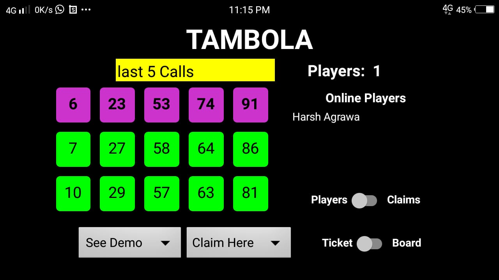

First Row

First Row is also called Top Row, 1st line, 1st row. When all Numbers of 1st line of tambola ticket are striked than it gives a chance to claim this prize. There are 5 numbers in a line. Sometimes people and players ask what is First Row? When First Row gets completed? How to claim First Row. Now with above details and image example given, it is easier to identify how First Row can be checked and claimed.